Measured results of running Gemma 4 on the Qualcomm SoC NPU with the ailia LLM 1.5.0 QNN backend, compared with CPU execution on the same device.
For how to use the QNN backend, see the ailia LLM NPU (QNN) Guide.
GGML_OPENMP=ON / OMP_NUM_THREADS=2.| Path | Throughput |
|---|---|
| CPU | 9.971 tokens/s |
| CPU (OpenMP) | 8.482 tokens/s |
| NPU (QNN) | 8.062 tokens/s |
NPU decode is 0.81x the CPU.
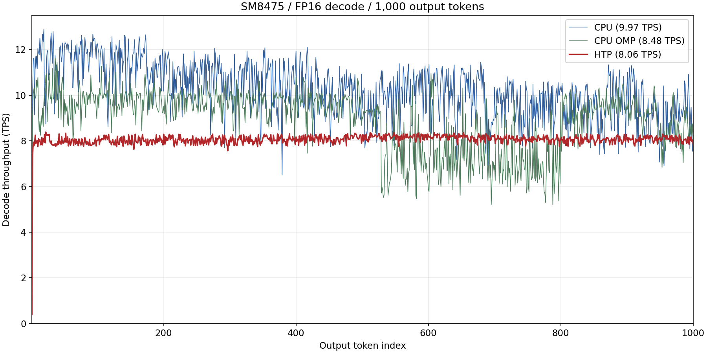
| Path | 64 | 128 | 256 | 512 | 1024 | 2048 |
|---|---|---|---|---|---|---|
| CPU | 109.359 | 95.722 | 88.243 | 85.663 | 79.940 | 71.244 |
| CPU (OpenMP) | 54.184 | 55.333 | 61.476 | 60.319 | 55.500 | 51.064 |
| NPU (FP16) | 76.244 | 144.406 | 277.775 | 302.667 | 301.791 | 299.827 |
With a 2,048-token input, the NPU is about 4.21x faster than the CPU (5.87x faster than the OpenMP build).
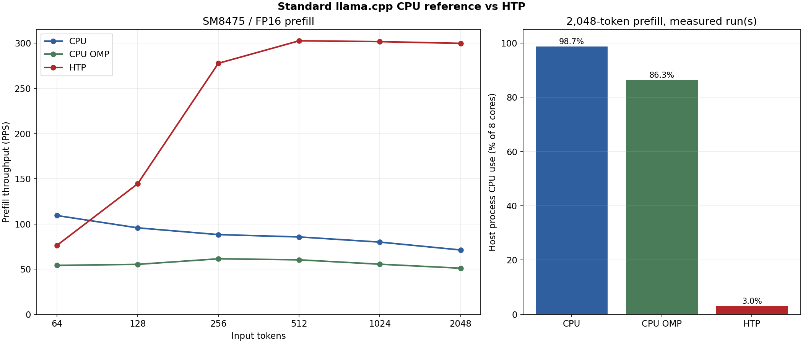
| Input | Path | TTFT (median) | Decode (median) | Output tokens |
|---|---|---|---|---|
| Image | CPU | 83.63 s | 12.081 tokens/s | 100 |
| Image | CPU (OpenMP) | 128.22 s | 7.491 tokens/s | 100 |
| Image | NPU (FP16) | 6.60 s | 7.033 tokens/s | 100 |
| Audio | CPU | 37.29 s | 10.416 tokens/s | 21-89 |
| Audio | CPU (OpenMP) | 36.49 s | 10.539 tokens/s | 21-89 |
| Audio | NPU (FP16) | 4.06 s | 6.495 tokens/s | 21-90 |
NPU TTFT is about 12.7x faster than the CPU for image input and about 9.2x faster for audio input.
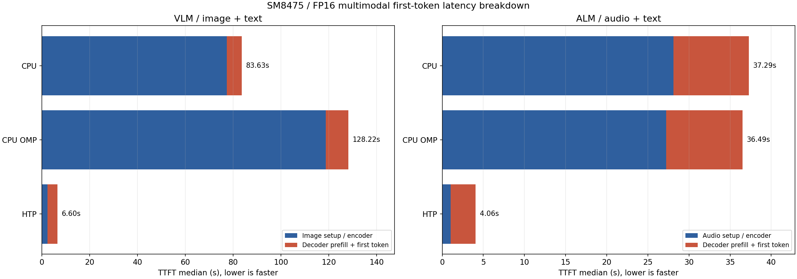
| Path | CPU use |
|---|---|
| CPU | 98.7% |
| CPU (OpenMP) | 86.3% |
| NPU (QNN) | 3.0% |
| Path | Throughput |
|---|---|
| CPU | 5.805 tokens/s |
| CPU (OpenMP) | 4.195 tokens/s |
| NPU (QNN) | 6.410 tokens/s |
NPU decode is 1.10x faster than the CPU (1.53x faster than the OpenMP build).
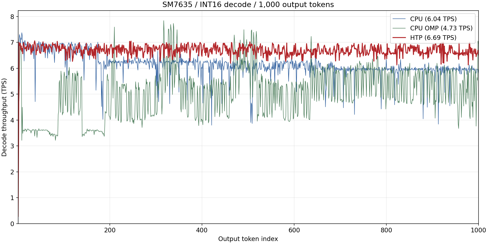
| Path | 64 | 128 | 256 | 512 | 1024 | 2048 |
|---|---|---|---|---|---|---|
| CPU | 91.550 | 77.064 | 80.496 | 76.187 | 69.757 | 59.192 |
| CPU (OpenMP) | 27.441 | 49.999 | 62.793 | 70.965 | 69.228 | 56.059 |
| NPU (Int16) | 33.601 | 66.523 | 130.329 | 133.404 | 131.367 | 130.252 |
With a 2,048-token input, the NPU is about 2.20x faster than the CPU (2.32x faster than the OpenMP build).
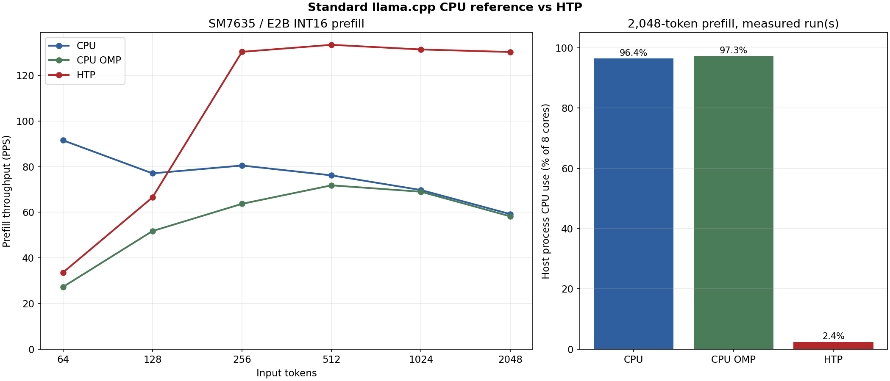
| Input | Path | TTFT (median) | Decode (median) | Output tokens |
|---|---|---|---|---|
| Image | CPU | 95.01 s | 5.891 tokens/s | 100 |
| Image | CPU (OpenMP) | 97.45 s | 3.569 tokens/s | 100 |
| Image | NPU (Int16) | 8.35 s | 6.444 tokens/s | 100 |
| Audio | CPU | 47.22 s | 5.166 tokens/s | 21-89 |
| Audio | CPU (OpenMP) | 35.37 s | 3.846 tokens/s | 21-89 |
| Audio | NPU (Int16) | 6.98 s | 6.356 tokens/s | 22-60 |
NPU TTFT is about 11.4x faster than the CPU for image input and about 6.8x faster for audio input.
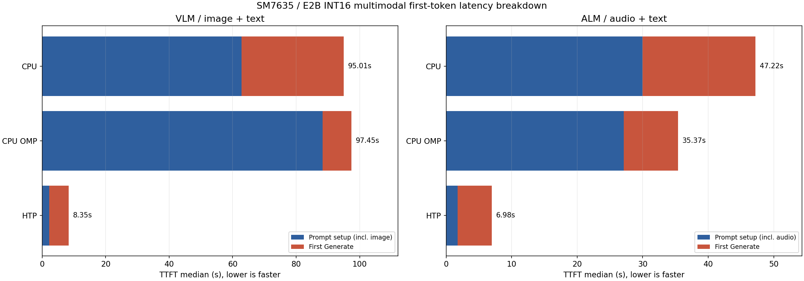
| Path | CPU use |
|---|---|
| CPU | 96.4% |
| CPU (OpenMP) | 97.3% |
| NPU (QNN) | 2.4% |
Memory usage while running the LLM, VLM and ALM configurations with 8 generated tokens (in MiB, context length 8192). The CPU path uses the Q4_0 GGUF with the BF16 mmproj, and the NPU path uses the Int16 QNN Model. Models are loaded with mmap, so anonymous memory (RssAnon, the working memory actually allocated) and file-backed mappings (RssFile, reusable page cache) are listed separately. Peak is the peak resident size of the process (VmHWM).
| Workload | Path | VmHWM | RssAnon | RssFile |
|---|---|---|---|---|
| LLM | CPU | 4574.2 | 1524.1 | 2896.5 |
| LLM | NPU (Int16) | 1666.8 | 386.4 | 1276.2 |
| VLM | CPU | 4881.2 | 2512.4 | 40.3 |
| VLM | NPU (Int16) | 2161.2 | 673.3 | 1483.7 |
| ALM | CPU | 4873.7 | 2623.0 | 1509.1 |
| ALM | NPU (Int16) | 2202.5 | 591.6 | 1606.7 |
mallopt(M_PURGE, 0) brings it down to about 23 MiB.| Path | Throughput |
|---|---|
| CPU | 3.351 tokens/s |
| CPU (OpenMP) | 3.203 tokens/s |
| NPU (QNN) | 3.128 tokens/s |
NPU decode is 0.93x the CPU.
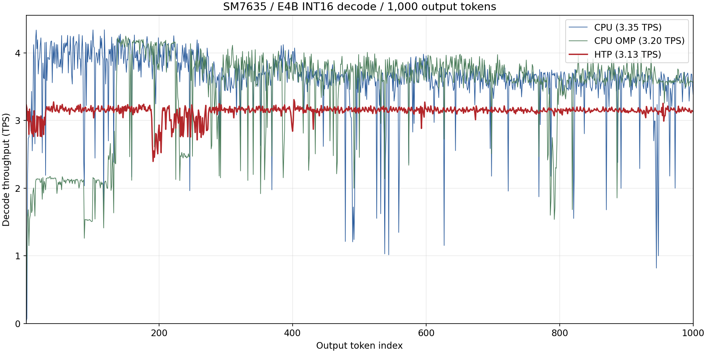
| Path | 64 | 128 | 256 | 512 | 1024 | 2048 |
|---|---|---|---|---|---|---|
| CPU | 1.697 | 29.105 | 28.417 | 62.663 | 64.383 | 60.897 |
| CPU (OpenMP) | 6.746 | 27.824 | 40.097 | 61.877 | 66.980 | 54.372 |
| NPU (Int16) | 20.304 | 40.890 | 80.700 | 83.758 | 83.314 | 78.258 |
With a 2,048-token input, the NPU is about 1.29x faster than the CPU (1.44x faster than the OpenMP build).
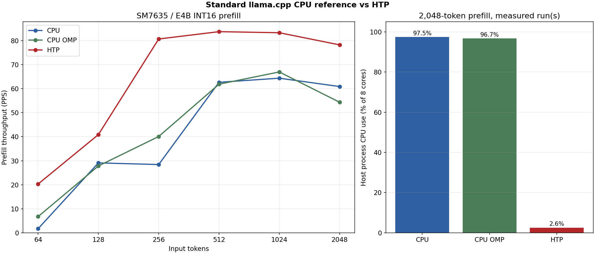
| Input | Path | TTFT (median) | Decode (median) | Output tokens |
|---|---|---|---|---|
| Image | CPU | 115.03 s | 3.332 tokens/s | 100 |
| Image | CPU (OpenMP) | 96.90 s | 2.642 tokens/s | 100 |
| Image | NPU (Int16) | 15.01 s | 3.098 tokens/s | 100 |
| Audio | CPU | 89.91 s | 3.053 tokens/s | 21-91 |
| Audio | CPU (OpenMP) | 45.99 s | 2.947 tokens/s | 21-91 |
| Audio | NPU (Int16) | 12.37 s | 3.018 tokens/s | 21-91 |
NPU TTFT is about 7.7x faster than the CPU for image input and about 7.3x faster for audio input.
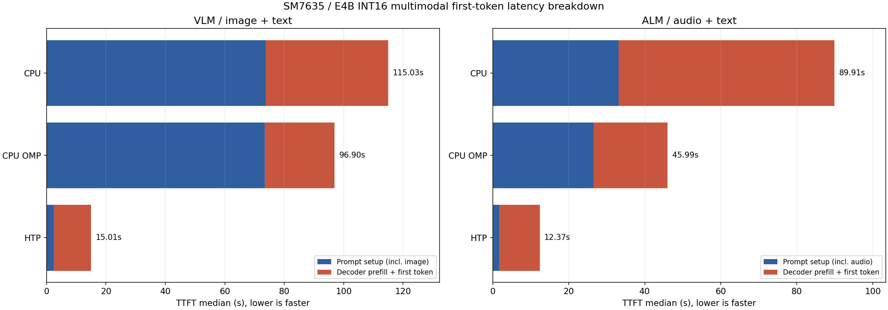
| Path | CPU use |
|---|---|
| CPU | 97.5% |
| CPU (OpenMP) | 96.7% |
| NPU (QNN) | 2.6% |
A reference measurement with a single LLM run per path, 81 input tokens and 100 output tokens (in MiB). The RssAnon / RssFile split was not captured, so live PSS is listed instead. These conditions differ from the E2B table.
| Workload | Path | VmHWM | Live PSS |
|---|---|---|---|
| LLM | CPU | 5569.8 | 4432.7 |
| LLM | CPU (OpenMP) | 5518.2 | 3922.2 |
| LLM | NPU (Int16) | 1976.0 | 1801.8 |
With E4B as well, the NPU peak is about a third of the CPU path. This measurement was taken with the device at Thermal Status 1 and is affected by Android page reclamation.
| Path | Throughput |
|---|---|
| CPU | 32.505 tokens/s |
| GPU | 12.590 tokens/s |
| NPU (QNN) | 7.988 tokens/s |
NPU decode is 0.25x the CPU.
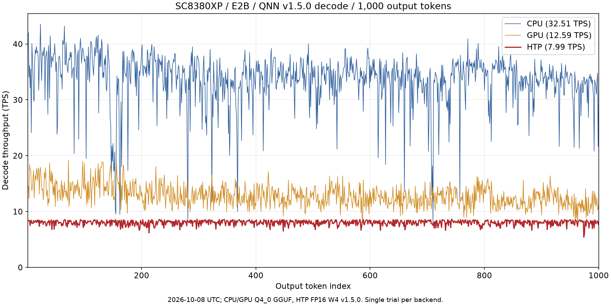
| Path | 64 | 128 | 256 | 512 | 1024 | 2048 |
|---|---|---|---|---|---|---|
| CPU | 249.314 | 205.403 | 214.986 | 194.638 | 176.262 | 155.627 |
| GPU | 152.814 | 184.829 | 201.471 | 190.109 | 168.583 | 149.012 |
| NPU (FP16) | 116.418 | 229.981 | 443.136 | 467.341 | 461.637 | 460.136 |
With a 2,048-token input, the NPU is about 2.96x faster than the CPU.
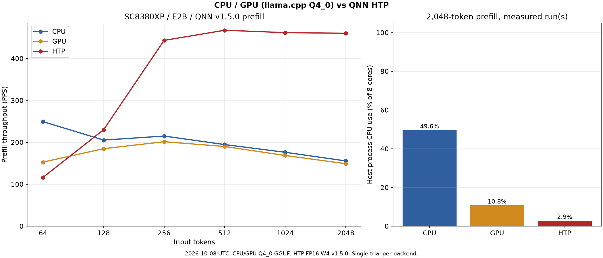
| Input | Path | TTFT | Decode | Output tokens |
|---|---|---|---|---|
| Image | CPU | 55.48 s | 37.546 tokens/s | 100 |
| Image | GPU | 57.74 s | 12.770 tokens/s | 100 |
| Image | NPU (FP16) | 7.06 s | 7.961 tokens/s | 100 |
| Audio | CPU | 28.13 s | 37.924 tokens/s | 33 |
| Audio | GPU | 27.86 s | 13.064 tokens/s | 33 |
| Audio | NPU (FP16) | 4.55 s | 8.162 tokens/s | 33 |
NPU TTFT is about 7.9x faster than the CPU for image input and about 6.2x faster for audio input.
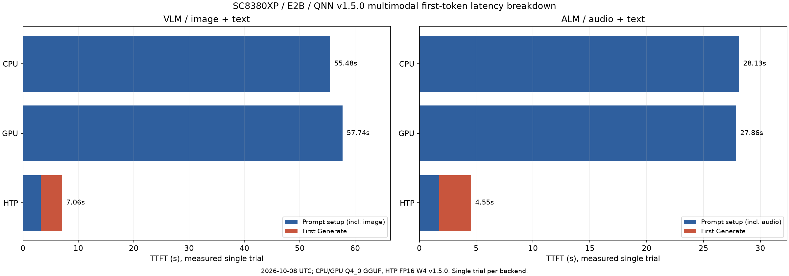
| Path | CPU use |
|---|---|
| CPU | 49.6% |
| GPU | 10.8% |
| NPU (QNN) | 2.9% |
The CPU runs on the 4 performance cores, so CPU usage stays around 50%.
| Path | Throughput |
|---|---|
| CPU | 15.230 tokens/s |
| GPU | 7.161 tokens/s |
| NPU (QNN) | 4.651 tokens/s |
NPU decode is 0.31x the CPU.
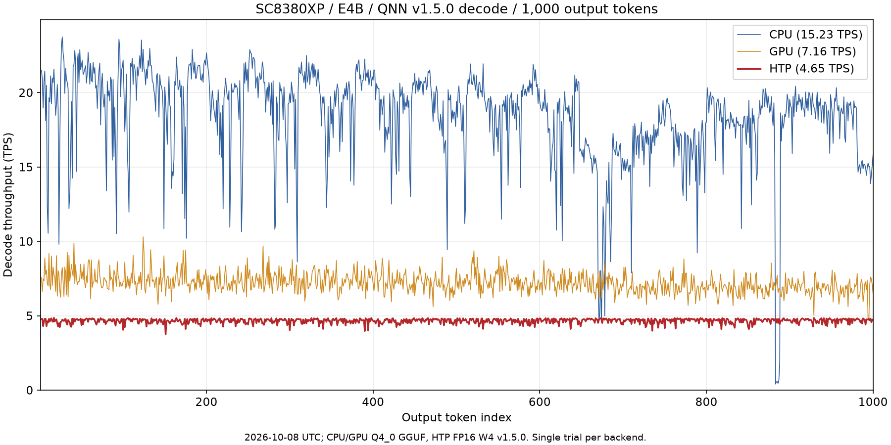
| Path | 64 | 128 | 256 | 512 | 1024 | 2048 |
|---|---|---|---|---|---|---|
| CPU | 83.793 | 98.738 | 115.542 | 106.402 | 97.419 | 80.109 |
| GPU | 80.661 | 102.021 | 111.457 | 110.693 | 101.195 | 93.148 |
| NPU (FP16) | 60.101 | 119.511 | 254.001 | 262.182 | 257.062 | 258.672 |
With a 2,048-token input, the NPU is about 3.23x faster than the CPU.
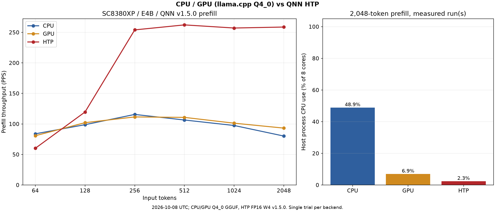
| Input | Path | TTFT | Decode | Output tokens |
|---|---|---|---|---|
| Image | CPU | 54.09 s | 20.161 tokens/s | 100 |
| Image | GPU | 57.98 s | 7.230 tokens/s | 100 |
| Image | NPU (FP16) | 10.22 s | 4.644 tokens/s | 100 |
| Audio | CPU | 27.67 s | 19.444 tokens/s | 33 |
| Audio | GPU | 33.24 s | 7.094 tokens/s | 33 |
| Audio | NPU (FP16) | 7.11 s | 4.606 tokens/s | 33 |
NPU TTFT is about 5.3x faster than the CPU for image input and about 3.9x faster for audio input.
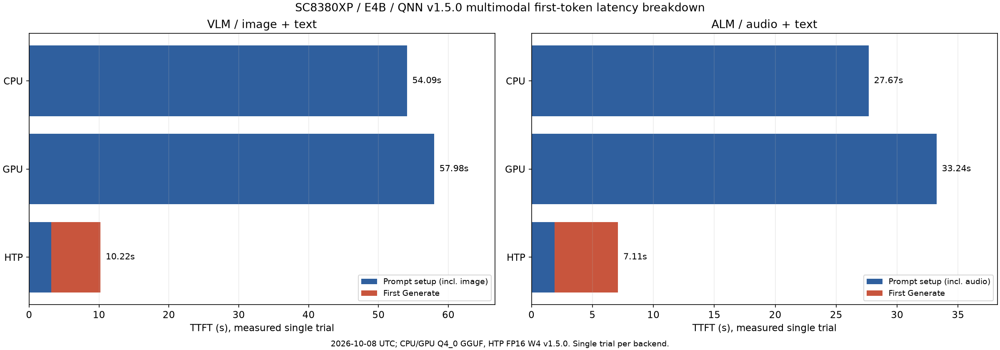
| Path | CPU use |
|---|---|
| CPU | 48.9% |
| GPU | 6.9% |
| NPU (QNN) | 2.3% |
The CPU runs on the 4 performance cores, so CPU usage stays around 50%.
| Path | Throughput |
|---|---|
| CPU | 7.983 tokens/s |
| NPU (QNN) | 4.405 tokens/s |
NPU decode is 0.55x the CPU.
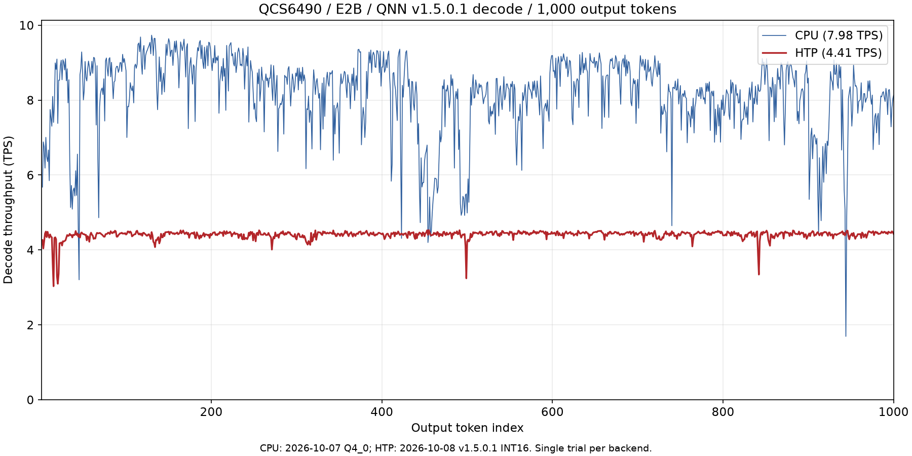
| Path | 64 | 128 | 256 | 512 | 1024 | 2048 |
|---|---|---|---|---|---|---|
| CPU | 63.773 | 73.745 | 68.787 | 59.803 | 50.623 | 51.408 |
| NPU (Int16) | 49.211 | 104.323 | 203.224 | 208.770 | 181.354 | 201.447 |
With a 2,048-token input, the NPU is about 3.92x faster than the CPU.
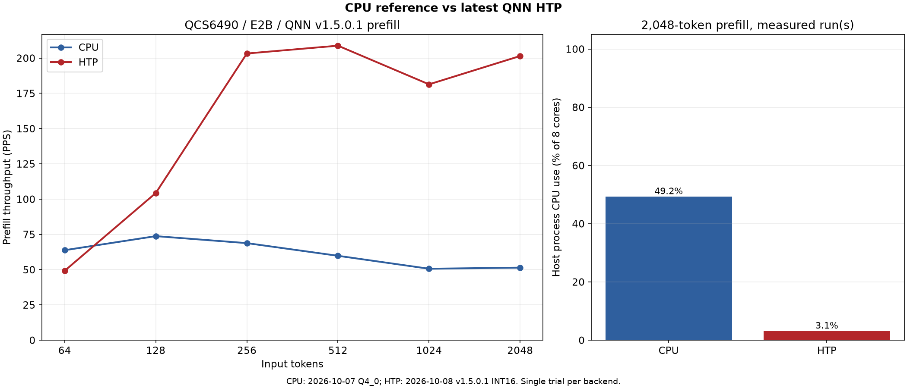
| Input | Path | TTFT | Decode | Output tokens |
|---|---|---|---|---|
| Image | CPU | 73.81 s | 8.603 tokens/s | 100 |
| Image | NPU (Int16) | 9.13 s | 4.361 tokens/s | 100 |
| Audio | CPU | 34.85 s | 9.081 tokens/s | 33 |
| Audio | NPU (Int16) | 7.08 s | 4.373 tokens/s | 33 |
NPU TTFT is about 8.1x faster than the CPU for image input and about 4.9x faster for audio input.
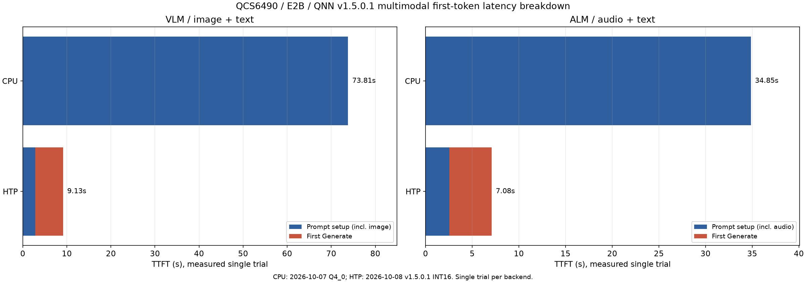
| Path | CPU use |
|---|---|
| CPU | 49.2% |
| NPU (QNN) | 3.1% |
The CPU runs on the 4 performance cores, so CPU usage stays around 50%.